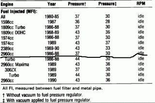

-
Hi! I have had a fuel pressure problem ever since I purchased my '88 300zx 2+2 (Non-Turbo GLL). I recently got around to try to fix it and purchased a fuel pressure tester. I put it in between the out side of my filter (which I replaced) and the hard fuel line. When you turn the key to the ON position it reads 33-38 PSI. However when you start the car it goes down to 25 PSI. I check the regulator and the pressure goes up when you remove the vacuum hose. I can't figure out what is wrong. Any suggestions would be wonderful.
Thanks,
Nehemiah -
Isn't it supposed to be like that? Pressure in the FPR depends on manifold air pressure. If there's vacuum in the plenum, the pressure is lower. If you unplug it, atmosphere pressure becomes the reference. Have you checked the FSM for FPR troubleshooting? -
I checked the FPR and it seems to be working correctly. It jumps up about 10 PSI when I remove that vacuum hose like it should. The problem now is when I start the car the fuel pressure drops from 35ish PSI (before cranking) to 25ish PSI (with car running). Any ideas what is causing this? -
Before cranking you have atmosphere pressure in the plenum, when idling, you have vacuum there. -
Fuel pressure of course will drop as soon as you crank or start the engine. This is so because the injectors are releasing pressurized fuel into the ports. When fuel escapes from the fuel line before the FPR, it is only natural that the fuel pressure drops. It is like you have been drinking a lot of water. Pressure builds up in your bladder. When you ease your pressurized bladder, pressure in your bladder naturally drops.
It works on the same principle.
Fuel pressure is constant at 35 PSI when you have the ignition ON (without cranking) is because pressurized fuel is not going anywhere ( assuming 1/2 is being returned to the tank). The other 1/2 is held constant which is pressurized. Once when there is a puncture, fuel escapes. Hence pressure drops although your pump might be constantly pumping fuel as the circuit is open at one end as opposed to a completely closed circuit. There is nothing wrong with your fuel supply. -
looks like your about where you need to be. you can pinch the return line slightly to bump pressure up to see if it changes whatever issue you may have. likely the fpr has failed, driving the car will tell you if it is a pump issue because fp will fall off since the pump cant keep up. our regulators rarely fail but if they do they generally leak through the vacuum port. may want to pull the sending unit and see what the tank looks like inside, only takes a few minutes.Hmmm, Whats next?
Full Size Bronco, smashing shit.
84ZXT

Copyright © 2006–. All rights reserved. Privacy Policy